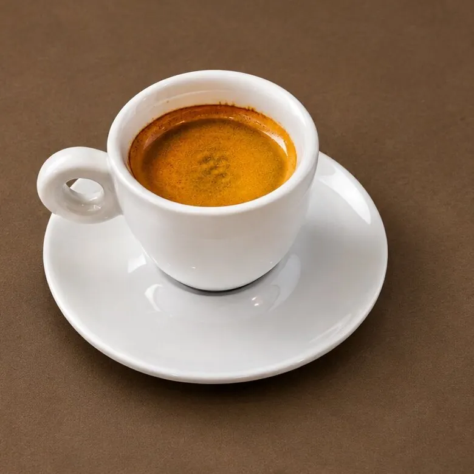
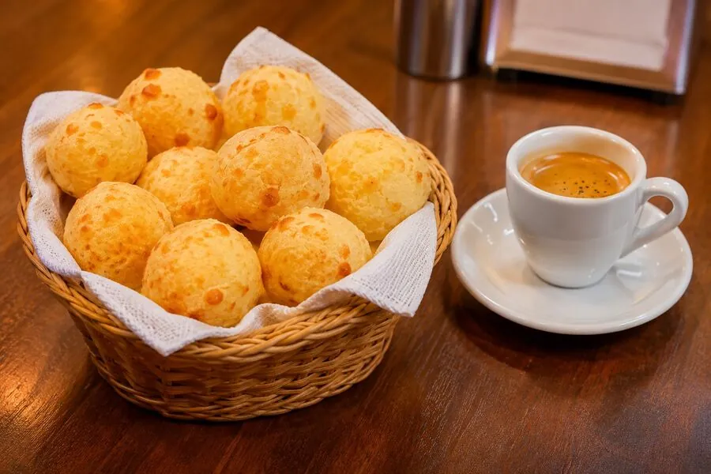
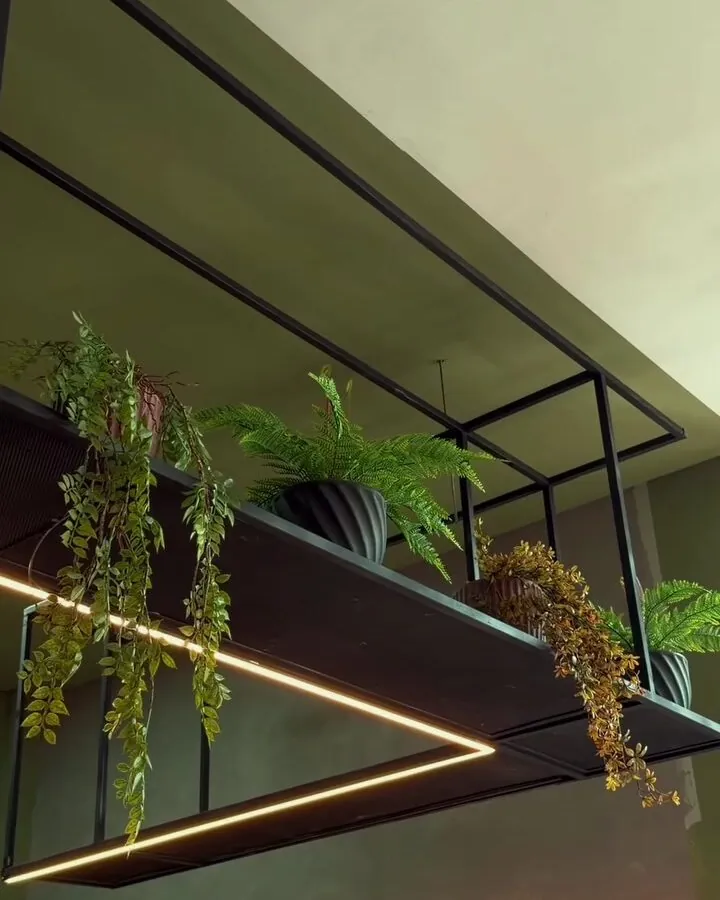
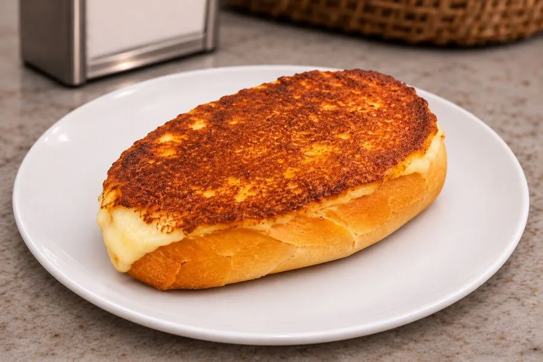

Café passado na hora, pão quentinho saindo do forno e um cantinho pra desacelerar. A Ruah fica no anexo da Igreja Casa Viva, na Av. Arthur Nonato, em São José do Rio Preto.

Do espresso curtinho ao pão com requeijão gratinado. Escolha uma categoria e passeie pelos itens.

Pão de queijo mini saindo do forno + um café espresso. Escolhe o tamanho da fome:
3 pães de queijo (mini)+ 1 café espresso
R$96 pães de queijo (mini)+ 1 café espresso
R$1510 pães de queijo (mini)+ 1 café espresso
R$20
Terça a domingodesde as 8h
Ruah é uma palavra hebraica que quer dizer sopro, fôlego, espírito. Foi daí que veio a ideia: um lugar pra recuperar o fôlego entre um compromisso e outro, com um café bem feito na mão.
A cafeteria nasceu em 2026, no anexo da Igreja Casa Viva Rio Preto, e abre as portas pra todo mundo — de quem chega pro culto a quem só está passando pela rua.
O café mais gostoso (e abençoado) da cidade!— Casa Viva Rio Preto, no dia da inauguração
Pão com requeijão gratinado: casquinha dourada por cima, requeijão derretendo por dentro. Aquela pedida clássica pra quando bate uma fominha no meio da manhã.
Vem provar